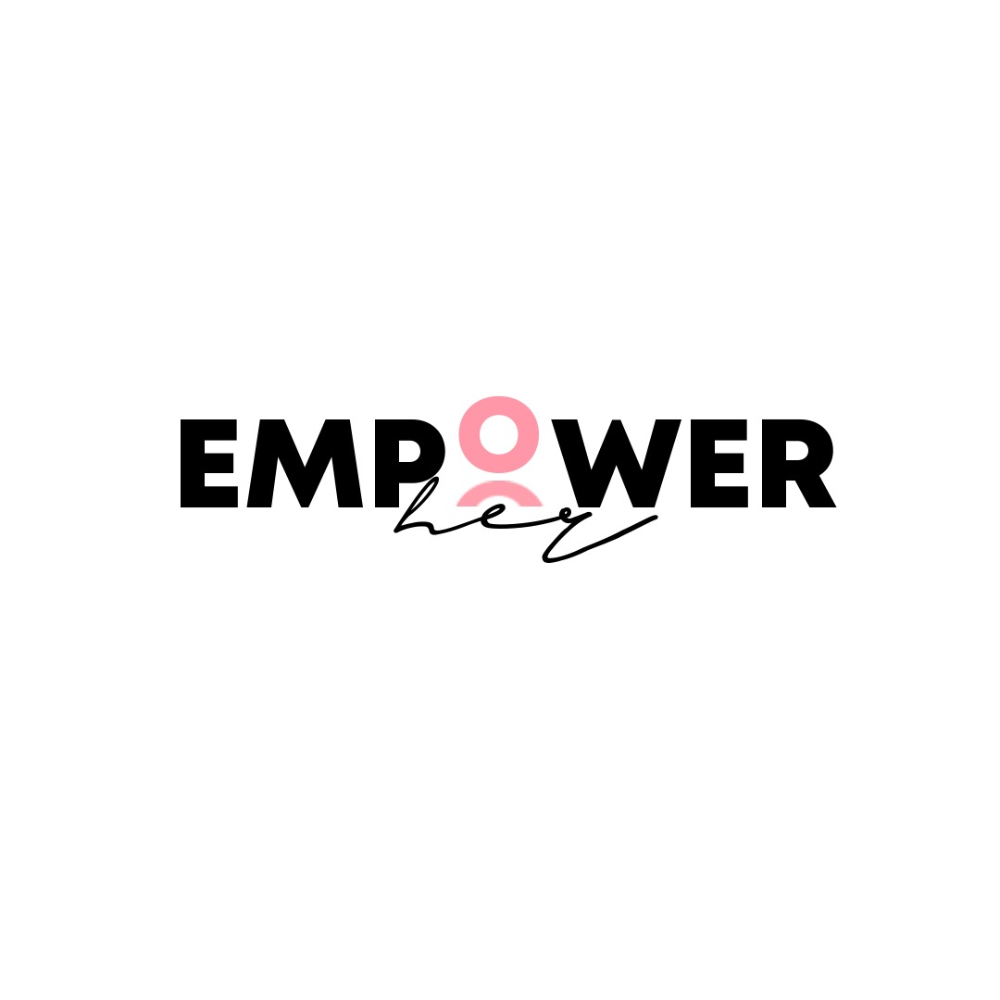
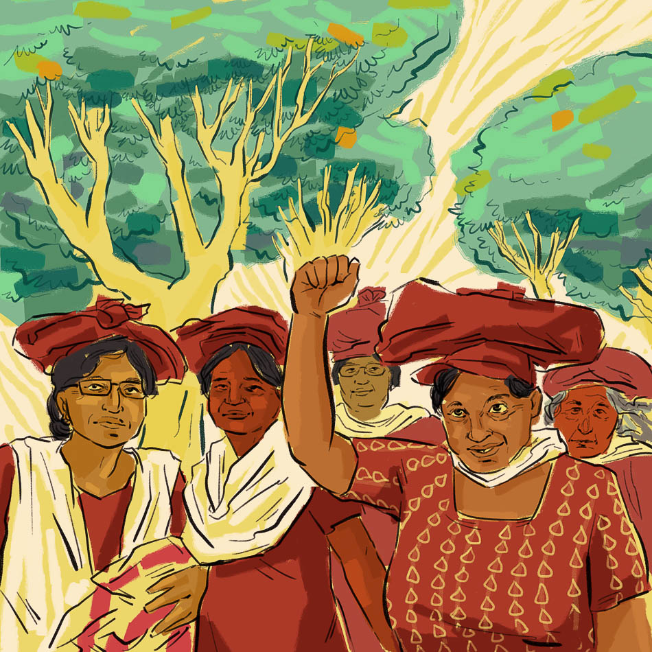
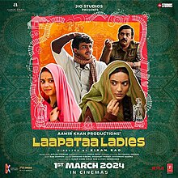

.jpeg)
"Empower Her" is an initiative by the students of The Heritage School aimed at empowering women through education, skill development, and financial literacy. The program aspires to build confidence, promote independence, and create leadership opportunities for women. Key goals include vocational training, mentorship, and fostering gender equality in society. Through this blog... our goal is to spread awareness in society and foster women upliftment.

women rights in India in comparison to global women rights
28/09/2024
Women's rights in India have made significant progress but continue to face challenges compared to global standards. India’s main obstacle in obtaining the objective of eliminating gender discrimination is social backwardness. There have been issues in Indian society like dowry-related violence, female infanticide and lack of access to healthcare and education which still persist to this day, mostly in rural areas. The government has taken initiatives to promote gender equality in education and employment. Nevertheless, these cultural and social barriers hinder any sort of progress to take place. India has been successful to a great extent in reducing various forms of social evils targeted against women like child marriage, Sati, etc. India has implemented laws to address this pay disparity and enhance workforce participation of women like the Minimum Wages Act 1948, the Equal Remuneration Act 1976 and the Maternity Benefit Act 2017. Even with these laws in place, gender equality ceases to exist. Violence against women still remains a critical issue globally. These problems in employment, safety, healthcare and education, continue to affect women compared to more developed nations.
Achieving the goal of gender equality would require continued efforts to break systemic barriers and backwardness.
India
Rights
Women oppression
28/09/2024
Over the years, there have been many instances of women persisting even with the constant oppression faced, especially in the Middle East and other conservative countries. For example-
The famous sports entertainment company, WWE(World Wrestling Entertainment), who has held many events in Saudi Arabia, did not have any women's matches in the country. However, since 2019, this has not been the case as women's wrestling is now approved to take place in WWE events held in Saudi Arabia.
Afghanistan Women's Football team wearing a hijab and competing in tournaments, which was a major headline in 2016.
Lujain al-Hathloul (Saudi Arabia) is a prominent women's rights activist who was arrested multiple times for her activism, including her involvement in the women's driving campaign and advocating for an end to the male guardianship system.
Kurdish Women's Protection Units (YPJ) is an all-female militia group that is part of the Syrian Democratic Forces and has been instrumental in fighting ISIS in Syria. The YPJ not only defends territory but also promotes women's rights and gender equality within Kurdish society.
During the 2011 Egyptian Revolution, groups of women joined the protests in Cairo's Tahrir Square, demanding political change and gender equality. Their participation was crucial in the movement that eventually led to the resignation of President Hosni Mubarak.
Women
WWE
Ypj
CHOICE
28/04/2024
The right to reproductive choice means that women have a right to choose whether or not to reproduce, including the right to decide whether to carry or terminate an unwanted pregnancy and the right to choose their preferred method of family planning and contraception.
States have obligations to respect, protect and fulfill rights related to women’s sexual and reproductive health. The Special Rapporteur on the right to health maintains that women are entitled to reproductive health care services, and goods and facilities that are:
available in adequate numbers;
accessible physically and economically;
accessible without discrimination; and
of good quality
Despite these obligations, violations of women’s sexual and reproductive health and rights are frequent. These take many forms, including:
denial of access to services that only women require;
poor quality services;
subjecting women’s access to services to third party authorization;
forced sterilization, forced virginity examinations, and forced abortion, without women’s prior consent;
female genital mutilation (FGM); and
early marriage.
In countries like El Salvador, Honduras, and Malta, abortion is completely banned, even in cases of rape or when the woman's life is at risk. In other places, such as some states in the U.S., there are severe restrictions and laws that make it difficult to access safe and legal abortion services.
In many parts of the world, especially in developing countries, women have limited access to contraception due to cultural, religious, or economic barriers.
Abortion
Health

LAAPATA LADIES
28/04/2024
‘Bhale ghar ki bahu beti’, quite rightly placed in the film is a method often used to manipulate women in our society to prevent them from taking a stand for themselves. Lapata Ladies, a film by director Kiran Rao, shows how two women, Jaya and Phool get replaced on a train journey when newly wed Deepak, unable to correctly identify his bride, Phool, takes Jaya home only to give his family members the shock of their lives. This film jibes at the societal norms and traditions. It begins with Deepak and Phool’s wedding in their village where an old lady instructs and advises Phool to get used to the ‘ghoonghat’ or the veil. A woman who isn’t allowed to see the husband’s face has to identify him by his shoes. Later in the film when Deepak and his friends are looking for his bride, they come across a man who is strictly against ‘burkha’, again veil. In the next scene his wife enters who wears a hijab. The sarcastic approach towards the ill-traditions and cultures of the society continues throughout the film. Jaya, who wishes to study Organic Farming, isn’t allowed to by her mother who supports the idea of getting married first more. She fights against the system and takes a stand for herself. The film portrays multiple emotions throughout. It shows how the label of masculinity on a man is not him being violent or rude towards others, but being soft and expressing emotions and love towards his close ones. A masterpiece like Lapata Ladies, which portrays society as it is, is rarely created.
Bollywood
India
Rights